| Seeing a concert at Red Rocks Amphitheater in
Denver has been on my bucket list for years. When I saw that one of
my favorite bands, The Barenaked Ladies, would be playing there in June, I
decided I wanted to go. I reached out to my wonderful sister and
asked if she'd join me for a spur-of-the-moment sister trip. She was
in so it was on! |
|
|
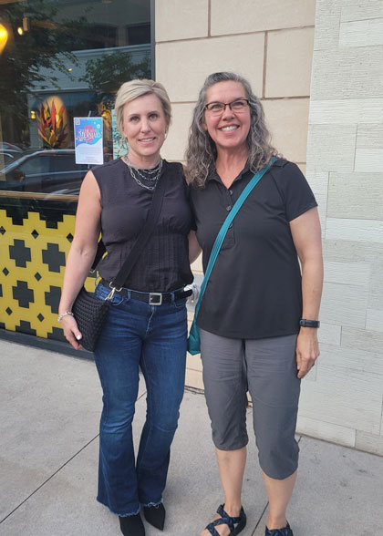 |
|
| Our first event was a lovely dinner out with my dear friend Kambria. I hadn't seen her in years - it was so fun to spend time with her again. |
Here's hoping that we don't go so long between visits next time! |
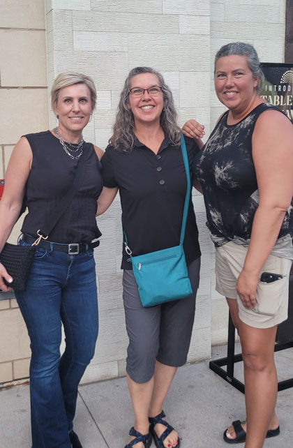 |
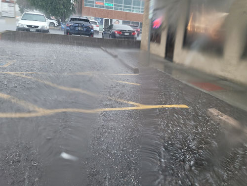 The next day, and just hours before our outdoor concert, it hailed and rained SO hard! |
| Thanks to a random passer-by, we all got in this photo. | |
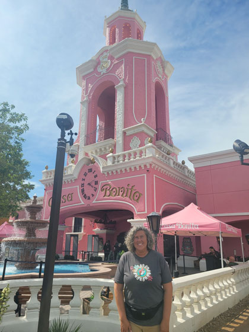 |
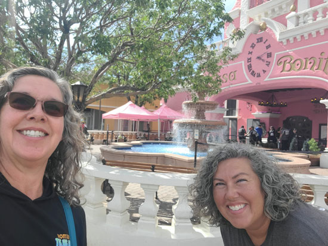 Here are our happy faces, just before they tell us you have to have reservations weeks in advance! |
| When we were kids, there was a Casa Bonita in Tulsa which was a huge treat to visit. We were so excited to visit this one! |
|
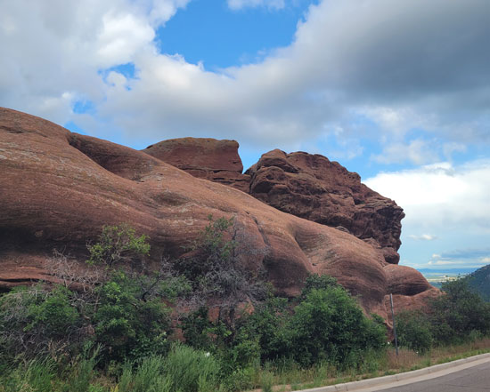 Getting our first glimpses of Red Rocks - it's beautiful! |
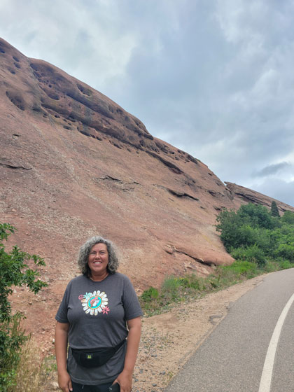 |
| And so is my sister! | |
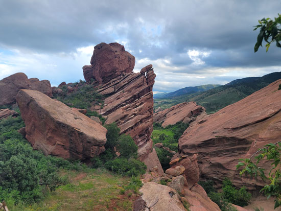 |
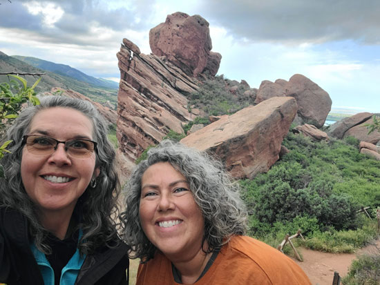 |
| Super cool formations. | Sister selfie! |
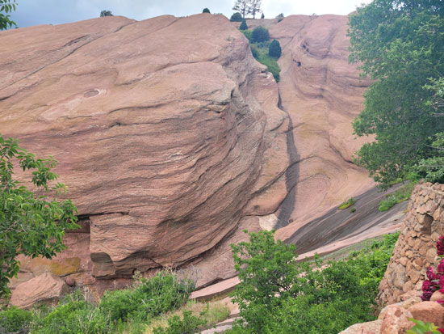 |
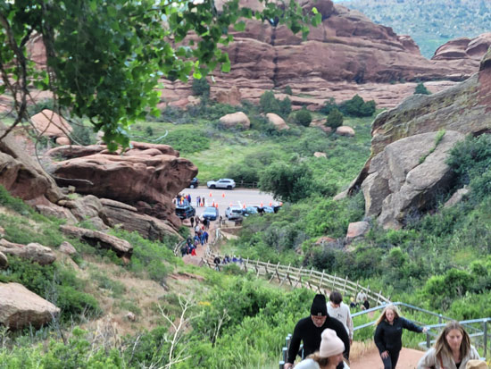 |
| Another giant rock face. | Everything at Red Rocks is either up the stairs or down the stairs. We
walked down from the parking lot to this entrance gate, then up stairs for ages to get into the amphitheater. This picture was taken near the half-way mark. |
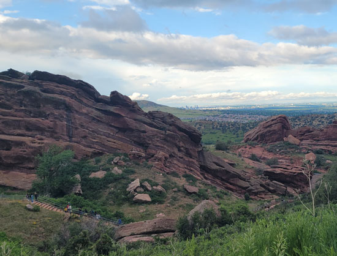 This shows some of the stairs, some formations, and downtown Denver in the background.
|
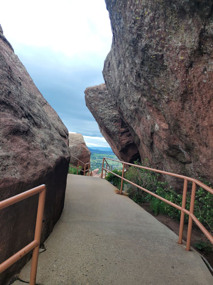 |
| They just stuck this walkway in wherever they could put it - cool! | |
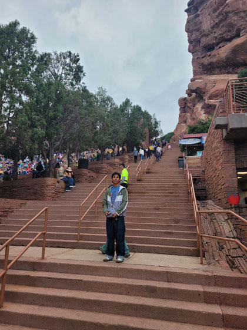 |
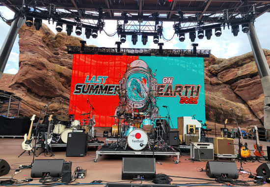 Our first look at the stage. They call that "Stage Rock" behind the screen. |
| The reward for climbing all those stairs? Being at the bottom of
another staircase! But our seats were down low so we caught some rest. |
|
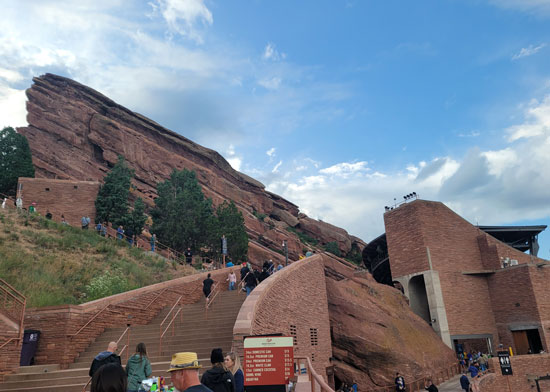 |
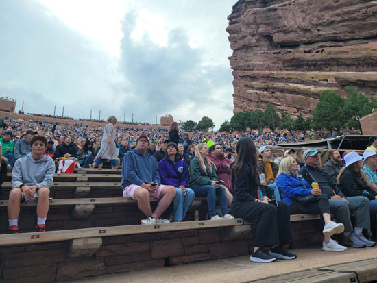 |
| A look at Red Rocks from the side. That is "Creation Rock"
on the left.
BTW - The bathrooms near us were unisex. It was so strange to stand in line for a stall with men! |
Looking up from our seats - the rows of seats seem to go on for ages! |
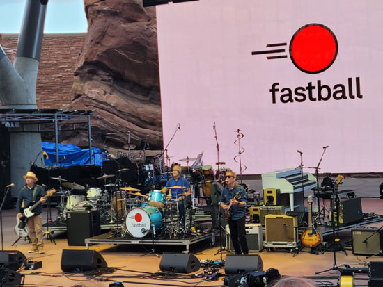 |
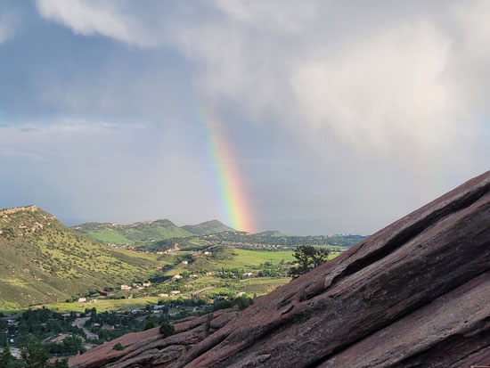 |
| And the music begins! Fastball opened and were great. | Between sets we saw this beautiful rainbow. |
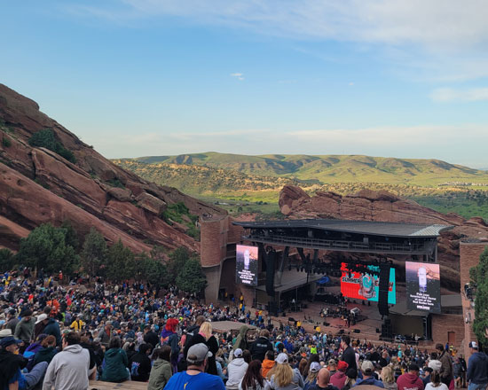 I wanted to get the full experience, so we decided to tackle the 194
steps from the stage |
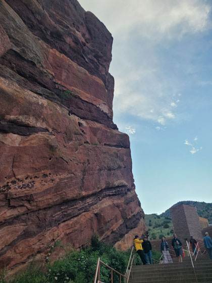 |
| The stairs run beside "Ship Rock". | |
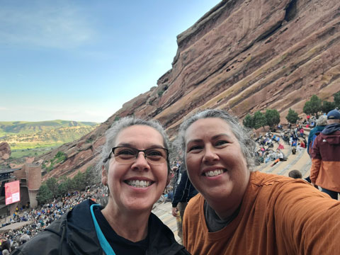 Selfie from near the top! |
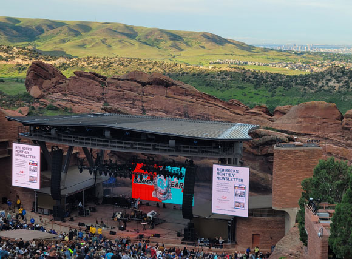 |
| Another shot showing the stage with downtown Denver in the background. | |
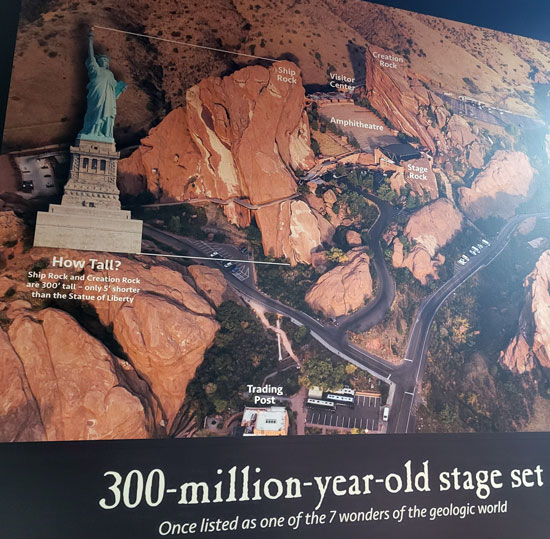 |
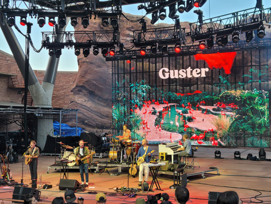 Next was Guster, a band we've never heard of who have a dedicated following. |
| They had an information center with these cool facts and more. | |
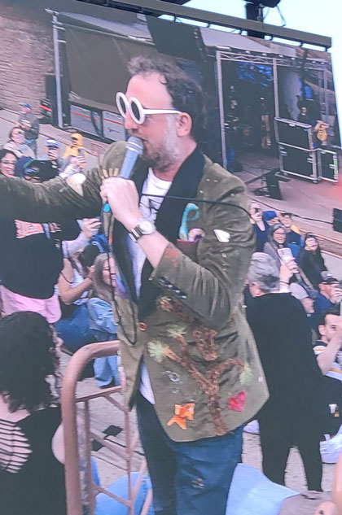 |
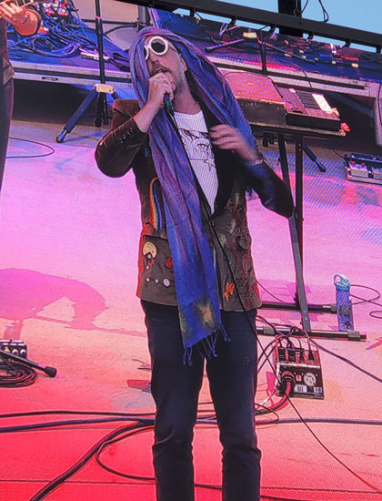 |
| Guster highlight - the singer went way up into the crowd. Random people put things on him like sunglasses and a scarf. |
Then he wore them back on stage and goofed around with them. I wonder if they ever get them back?! |
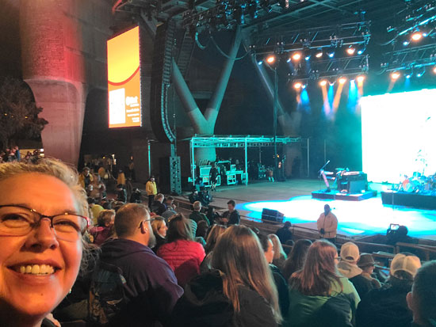 |
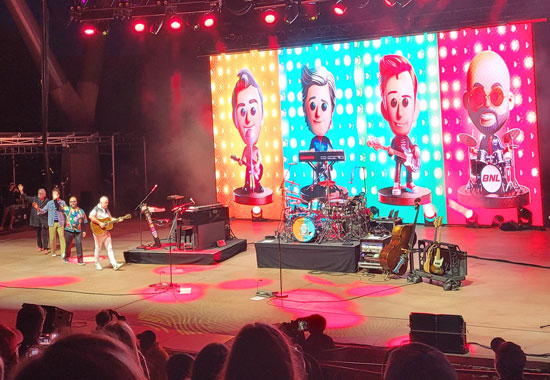 |
| Ready for the main event from our wonderful seats. | Here they come! |
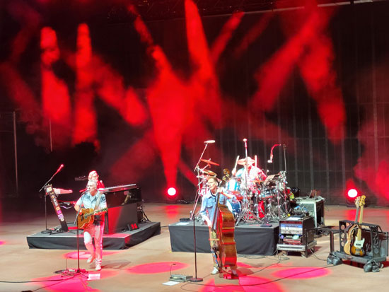 |
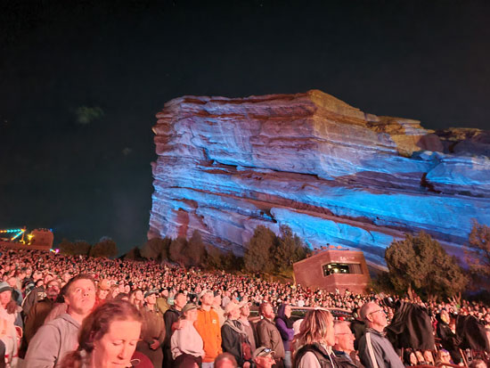 |
| These guys are like a comedy act and a concert rolled into one. They are so funny. | A look at the huge crowd and Creation Rock all lit up at night. |
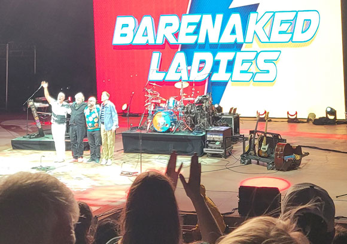 |
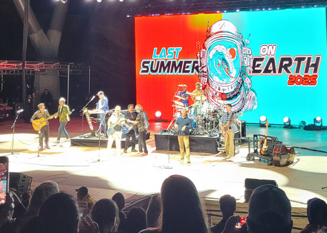 |
| Taking a bow at the end... | But wait, there's more! They did an encore with Guster & Fastball. |
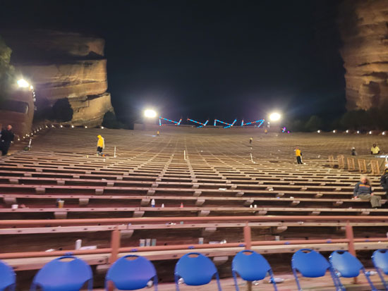 |
|
| In the time it took to visit the nearby bathroom, the whole place emptied
out.
|
I sure appreciate my sweet sister for being willing to do crazy things like
this!
And we both appreciate Mom & Dad for watching Brodie so we could go. Thank you!! |